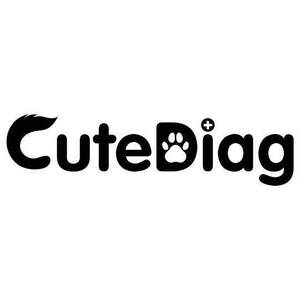

Trade Mark Journal No.2025/051 19 December 2025
UK00004306830 8 December 2025 (5,10,35)

- Class 5
- Repellents for animals; Bacteria fighting cleanser; Insect repellent agents; Biochemical preparations for veterinary use; Contraceptive sponges; Air deodorants; Dietary fiber; Antibiotics; Antibiotic ointments; Paper diapers; Ophthalmologic preparations; Wipes for medical use; Medicines for veterinary purposes; Medical diagnostic test strips; Antibiotics for veterinary use; Dietary food supplements; Mouth cavity cleansers; Dietary supplements for human beings and animals; Sanitary pants for pets; Eye drops; Nematocides; Veterinary diagnostic reagents; Diapers for pets; Mineral dietary supplements for animals; Dietary supplemental drinks; In vitro diagnostic preparations for medical use; Sanitizing wipes; Pharmaceutical preparations for veterinary use; Paper nappies for infants.
- Class 10
- Articles for nursing infants; Protective clothing for medical purposes; Apparatus for orthopaedic purposes; Dermabraders; Detecting instruments for veterinary use; Medical apparatus and instruments; Hearing aids; Clothing, headgear and footwear for medical personnel and patients [other than uniforms]; Nebulisers; Electric esthetic massage apparatus for household purposes; Massage appliances; Ultrasonic apparatus for medical use in diagnosis; Sex toys; Sphygmotensiometers; Electrocardiographs for veterinary use; Ice bags for medical purposes; Protective mouth masks for medical use; Optical temperature measuring instruments for medical inspection purposes; Diagnostic, examination, and monitoring equipment; Gloves for veterinary use; Massaging apparatus for personal use; Glucometers; Infrared thermometers for medical purposes; Medical gowns; Patient monitoring instruments; Blood pressure monitors; Thermometers for medical purposes.
- Class 35
- Retail services in relation to pet products; Organization of fairs and exhibitions for commercial and advertising purposes; Merchandizing; Consultations relating to advertising; Advertising, marketing and promotion services; Computer data processing; Commercial consultancy; Retail services in relation to dietary supplements; Demonstration of products; Retail services for computer software; On-line advertising; Elevator advertising; Retail services in relation to bedding for animals; Online business networking services; Wholesale services for pharmaceutical, veterinary and sanitary preparations and medical supplies; Advertising services relating to pharmaceuticals; Wholesale services in relation to medical apparatus; Digital marketing services; Retail services in relation to beauty implements for animals; Retail services for pharmaceutical, veterinary and sanitary preparations and medical supplies; Retail services in relation to hygienic implements for animals; Wholesale services in relation to dietary supplements; Retail services in relation to medical apparatus.
AuQty Biotech (Dongguan) Co., Ltd.
Representative: FUKUO BUSINESS LTD